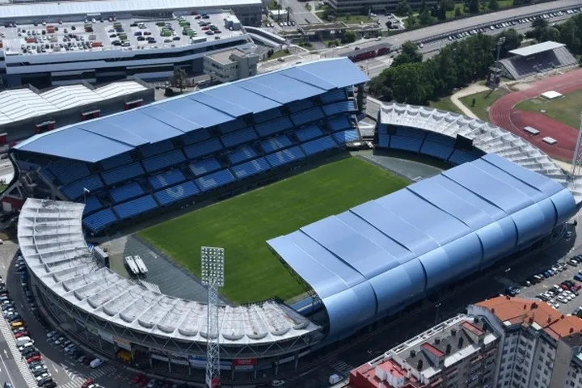

Treinador: Claudio Giráldez
Claudio Giráldez assumiu o comando técnico com o propósito de consolidar um projeto de continuidade e fidelidade às raízes do Celta de Vigo. O treinador galego destaca-se pela sua capacidade de liderança e pela confiança absoluta na valorização dos jovens da cantera.
Estádio: Abanca Balaídos
O Estádio Abanca Balaídos, inaugurado em 1928, tem capacidade para cerca de 29.000 espectadores e é conhecido pela sua atmosfera vibrante e pela forte ligação entre o clube e a cidade de Vigo.

Estilo de Jogo:
O estilo de jogo de Claudio Giráldez no Celta de Vigo em 2026 é definido pelo protagonismo com a bola e por uma estrutura tática moderna que privilegia a polivalência dos jogadores.
"Afouteza e Corazón!"